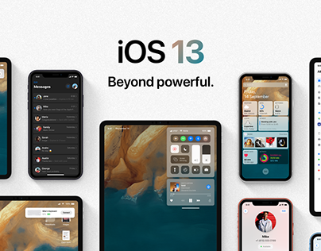
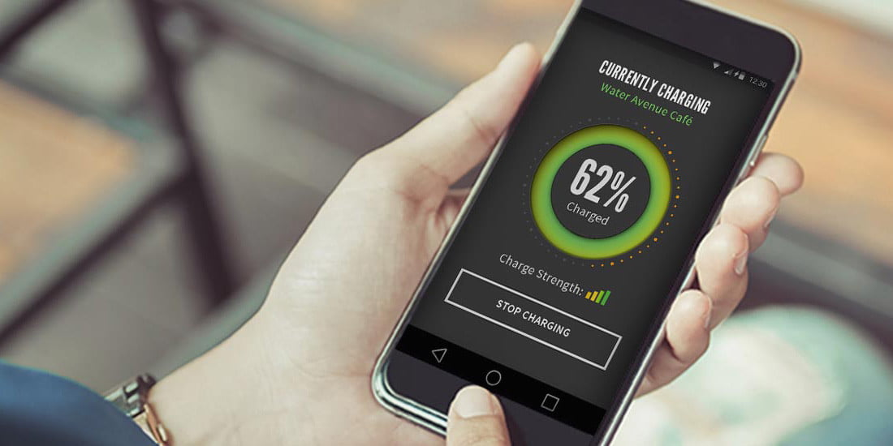

The Conceptual Power Drop
There is this freelance designer Alvaro Pabesio based in Spain, that I really admire the work of. His instagram feed is really aesthetic, surely check him out if you guys are into that sort of thing. This morning he posted something that really caught my eye. He posted this concept of something called an power drop. According to Alvaro “... PowerDrop; sort of an Air Drop, but instead of file sharing, its power. I’m pretty sure the future of iPhones (or smartphones in general) is completely wireless.” He believes that Apple will sooner or later implement true long range wireless charging. He further goes on to clarify how this is different from the so called wireless charging right now which uses Qi technology, basically touching the back of the phone. PowerDrop he believes will be able to transfer power over long distances, just like we do with data using AirDrop.
(In pic: Alvaro Pabesio)
It would really be cool though, you know. Asking your friend if you could borrow a little bit of their battery life, just like you do when you run out of spare change. In a modern world where most of your shit is dependent upon phones and virtual stuff in general; from your credit cards, to bank transfers, to general grocery payments, this dependency though comes at a cost; battery life. Such a big breakthrough it would be, I feel, in the techno world.
So taking interests forward, I tried searching a bit here and there, about his whole power through the air thingy. I mean if you could transfer data over long range, there must be a possibility of sending power through this same direct. The only twist would be that it will have to be converted into some sort of signal to be transferred through a medium like air? Through some sort of wave? Wave is a common term for a number of different ways in which energy is transferred.

You see, electricity can indeed be transferred through the air. But here’s the catch; standard temperature and pressure of air has very high resistance to the flow of electric current. This is a good thing. Ever wondered what makes walking under high voltage power lines convenient? Yeah, now you do know. So there must certainly be a way around this problem. I mean think about it you can’t directly transfer power; but what if you could convert it into something, this could open the gates to several possibilities.
According to Chun T. RIm, a professor in the Quantum Energy department in KAIST, the leader of the team that showcased the DCRS back in 2014, "Our technology proved the possibility of a new remote power delivery mechanism that has never been tried at such a long distance. Although the long-range wireless power transfer is still in an early stage of commercialization and quite costly to implement, we believe that this is the right direction for electric power to be supplied in the future. Just like we see Wi-Fi zones everywhere today, we will eventually have many Wi-Power zones at such places as restaurants and streets that provide electric power wirelessly to electronic devices. We will use all the devices anywhere without tangled wires attached and anytime without worrying about charging their batteries." The entire concept of Power Zones in itself is so cool.

It is notable how the world is moving towards a system without wires. Companies like Apple and google have constantly on the push for reducing the number of ports on their phone motivating wireless connectivity in general. Google’s chromecast is another such example which eliminates the use of HDMI cables.`